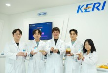
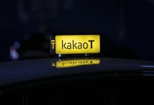
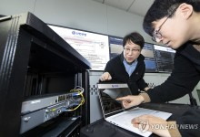

헤드라인 뉴스

전고체전지 상용화 활짝…고체전해질 대량생산 기술 개발
차세대 전지인 전고체전지용 고체전해질을 단순 공정으로 대량 생산하는 기술이 국내 연구진들에 의해 개발됐다. 한국전기연구원(KERI)은 차세대전지연구센터 박준우 박사와 성정환 연구원(UST KERI 캠퍼스 학생 연구원
서울경제

금감원이 손대자...카카오모빌리티 매출 4천억 줄었다
카카오모빌리티가 금융감독원의 제재로 매출 기준을 변경하면서 지난해 매출이 약 4000억원 줄어든 것으로 나타났다. 18일 카카오모빌리티가 최근 주주들에게 발송한 주주총회 소집 통지서 내 재무제표에 따르면 지난해 연결
파이낸셜뉴스
쏘카 "모두의주차장 네이버서도 편리하게 이용"
쏘카(403550)가 자사 온라인 주차 플랫폼 '모두의주차장' 제휴 주차장 검색 및 주차권 구매 서비스를 네이버(035420) 예약과 연동한다고 19일 밝혔다. 서비스 연동은 지난해 7월 쏘카와 네이버가 차세대 스마
뉴스1

"접속 수십만 건에 오류 0"…KT, 신한은행 양자 보안망 구축
KT는 신한은행에 양자키분배(QKD)와 양자 내성 암호(PQC)를 결합한 하이브리드형 양자 보안망을 임시로 구축하고 성능을 검증했다고 19일 밝혔다. 서울 중구 신한은행 본점과 강남구 신한은행 강남 별관을 연결하는
연합뉴스
네오위즈, 'P의 거짓' 글로벌 누적 이용자 700만 달성
네오위즈는 자체 개발작 ‘P의 거짓(Lies of P)’이 출시 5개월 만에 글로벌 누적 이용자 수 700만명을 달성했다고 19일 밝혔다. 지난해 9월 19일 글로벌 동시 출시한 P의 거짓은 뛰어난 전투 시스템을 내
뉴시스